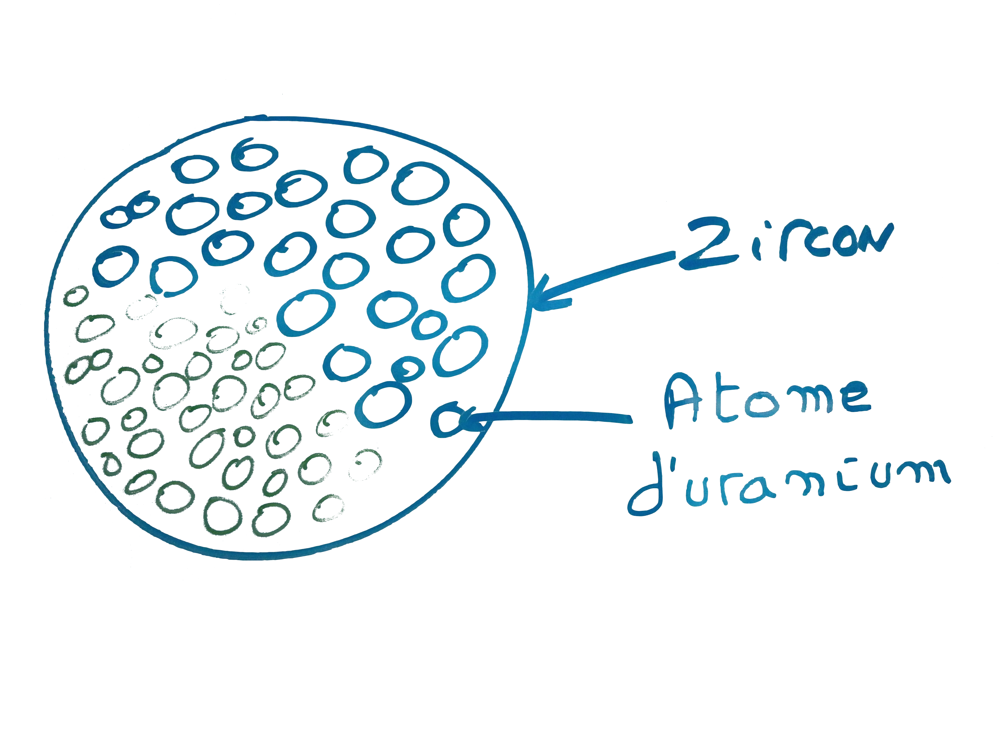

Kickstarting Topsoil
Création d'un outil de tracé de schémas pour géochronologistes
Sommaire
- Introduction
- Présentation du projet
- Ma contribution au projet
- Retour sur l'experience
Le travail des géochronologistes est de determiner l'âge d'objets terrestres
Le stage

Projet Topsoil

| 207Pb*/235U |
±2σ (%) |
206Pb*/238U |
±2σ (%) |
corr coef |
| 29.165688743 |
1.519417676 |
0.712165893 |
1.395116767 |
0.918191745 |
| 29.031535970 |
1.799945600 |
0.714916493 |
1.647075269 |
0.915069472 |
| 29.002008069 |
1.441943510 |
0.709482828 |
1.324922704 |
0.918845083 |
| 29.203969765 |
1.320690194 |
0.707078490 |
1.216231698 |
0.920906132 |
| 29.194452092 |
1.359029744 |
0.709615006 |
1.248057588 |
0.918344571 |
| 29.293320455 |
1.424328137 |
0.710934267 |
1.309135282 |
0.919124777 |
| 28.497489852 |
1.353243890 |
0.686951820 |
1.245648095 |
0.920490463 |
| 29.218573677 |
1.383868032 |
0.715702180 |
1.271276031 |
0.918639641 |
| 28.884872020 |
1.264304654 |
0.702153693 |
1.164978444 |
0.921438073 |
| 28.863259209 |
1.455550200 |
0.700081472 |
1.335582301 |
0.917579003 |
| 29.014325453 |
1.614480021 |
0.701464404 |
1.478394505 |
0.915709384 |
| 29.917885787 |
1.564622589 |
0.725185047 |
1.434906094 |
0.917094067 |
| 30.159907714 |
1.488528691 |
0.724886106 |
1.366282212 |
0.917874287 |
| 28.963153308 |
1.480754780 |
0.698240706 |
1.359750830 |
0.918282249 |
| 29.350104553 |
1.513999270 |
0.711983592 |
1.384417989 |
0.914411266 |
| 29.979576581 |
1.595745814 |
0.724426340 |
1.458894294 |
0.914239775 |
| 29.344673618 |
1.551935035 |
0.714166474 |
1.420060290 |
0.915025602 |
La librairie ControlsFX integre des nouveaux élélments d'interface graphique ainsi que le principe d'actions.
Une action est un objet qui réalise une action en réaction à un signal d'un utilisateur.
Elle sont parfaitement integrées dans chaques éléments d'interface de ControlsFX.
Le SVG Converter
Il permet au géochronologistes de convertir un graphique dans un format vectoriel, le SVG.
Un convertisseur d'interface JavaFX en SVG a pour cela été créé
Conversion des interfaces en FXML
class SimplePane extends VBox{
public SimplePane(){
Label label = new Label("Vincent Vega");
Button bouton = new Button("Change brother");
bouton.setOnAction((ActionEvent e) -> {
label.setText("Vic Vega");
});
getChildren().add(bouton);
getChildren().add(label);
}
}
class SimplePane extends VBox{
@FXML private Label label;
public SimplePane(){
FXMLLoader loader = new FXMLLoader(getClass().getResource("chartcustomizationpanel.fxml"),
ResourceBundle.getBundle("org.cirdles.topsoil.Resources"));
loader.setRoot(this);
loader.setController(this);
try {
loader.load();
} catch (IOException e) {
getChildren().add(new Label("There was an error loading this part of the panel."));
e.printStackTrace();
}
}
@FXML
private void changeBrother(){
label.setText("Vic Vega");
}
}
Customization Panel
Donner aux géochronologistes la possibilité de personnaliser les diagrammes pour qu'ils s'integrent parfaitement à leur présentations
Retours sur experience
- Technique
- Culture générale
- Organisationel
JavaFX
Une excelente, mais encore un peu jeune, librairie graphique
Java 8 et les fonctions lambdas
Une introduction à la programmation fonctionelle
Autres apports techniques
Attendez, une dernière chose...
- Steve Jobs
Git !
Un des meilleurs systèmes de versionnage de fichier au monde !
GitHub !
Une des meilleurs site web de collaboration entre developpeurs (et autres) basé sur Git
GitHub : Un precieux outil d'organisation pour l'équipe

Réaliser plusieurs tâches dans un projet
Le besoin de développer à plusieurs vitesses.
Gêrer plusieurs intensités de developpement
- Periodes intenses
- Periodes marathons
Documentation et tests
Une question de volonté